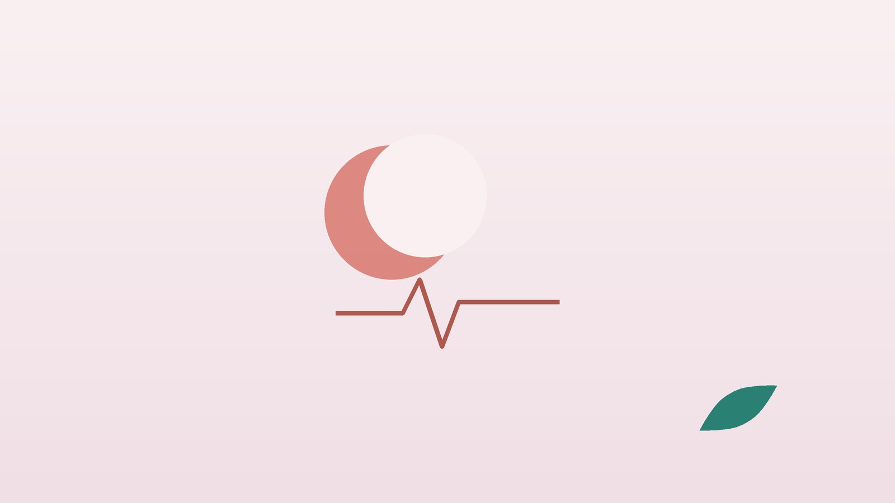

건강 칼럼 · 여성·임신·남성
여성·임신·남성 칼럼 32편
생리·자궁·갱년기 같은 여성 질환, 임신 준비부터 산후 회복까지, 그리고 남성 갱년기·전립선·비뇨기 질환을 모았습니다. 체성분·혈액 검사와 진맥으로 몸 상태를 살펴 탕약과 침으로 관리합니다.
← 전체 분류 보기여성 건강 15편
생리통, 생리불순, 다낭성난소증후군, 자궁근종, 갱년기처럼 여성의 주기와 호르몬에 관련된 질환을 다룬 칼럼입니다. 체성분·혈액 검사와 진맥으로 몸 상태를 살펴 탕약과 침으로 관리하며, 갱년기 다이어트도 진료합니다. 갑작스러운 심한 복통이나 많은 출혈은 산부인과 진료가 먼저입니다.
 생리통매달 진통제 없이는 버티기 힘들다면, 생리통 한방 치료와 관리
생리통매달 진통제 없이는 버티기 힘들다면, 생리통 한방 치료와 관리

생리 편두통생리 때마다 머리가 지끈거린다면, 월경 편두통 한방 관리 생리전증후군생리 전마다 붓고 예민해진다면, 생리전증후군 한방 관리
생리전증후군생리 전마다 붓고 예민해진다면, 생리전증후군 한방 관리
 배란통생리 사이 한쪽 아랫배가 콕콕 쑤신다면, 배란통 한방 관리
배란통생리 사이 한쪽 아랫배가 콕콕 쑤신다면, 배란통 한방 관리
 생리불순달력을 봐도 다음 생리를 예측할 수 없다면, 생리불순 한방 관리
생리불순달력을 봐도 다음 생리를 예측할 수 없다면, 생리불순 한방 관리
 무월경몇 달째 생리가 없다면, 무월경 원인 확인과 한방 치료
무월경몇 달째 생리가 없다면, 무월경 원인 확인과 한방 치료
 월경과다생리량이 많아 일상이 힘들다면, 월경과다 원인 확인과 한방 관리
월경과다생리량이 많아 일상이 힘들다면, 월경과다 원인 확인과 한방 관리
 다낭성난소증후군생리가 몇 달씩 건너뛴다면, 다낭성난소증후군 한방 관리
다낭성난소증후군생리가 몇 달씩 건너뛴다면, 다낭성난소증후군 한방 관리
 자궁근종생리량이 많고 아랫배가 묵직하다면, 자궁근종 확인과 한방 관리
자궁근종생리량이 많고 아랫배가 묵직하다면, 자궁근종 확인과 한방 관리
 자궁선근증생리통이 해마다 심해지고 생리량이 많다면, 자궁선근증 한방 관리
자궁선근증생리통이 해마다 심해지고 생리량이 많다면, 자궁선근증 한방 관리
 자궁내막증생리통이 해마다 심해진다면, 자궁내막증 확인과 한방 관리
자궁내막증생리통이 해마다 심해진다면, 자궁내막증 확인과 한방 관리
 난소낭종난소에 혹이 있다는 말을 들었다면, 난소낭종 이해와 관리
난소낭종난소에 혹이 있다는 말을 들었다면, 난소낭종 이해와 관리
 질염·냉대하냉이 늘고 가렵고 냄새가 난다면, 질염·냉대하 한방 관리
질염·냉대하냉이 늘고 가렵고 냄새가 난다면, 질염·냉대하 한방 관리
 반복성 방광염방광염이 자꾸 재발한다면, 반복성 방광염 한방 관리
반복성 방광염방광염이 자꾸 재발한다면, 반복성 방광염 한방 관리
 갱년기갑자기 얼굴이 화끈거리고 잠을 설친다면, 갱년기 증상 한방 관리
갱년기갑자기 얼굴이 화끈거리고 잠을 설친다면, 갱년기 증상 한방 관리
임신·출산 10편
임신 준비, 난임, 입덧, 임신 중 허리통증, 산후풍과 산후 회복을 정리했습니다. 임신 중이라면 진료 때 주수와 상태를 꼭 알려 주세요. 확인 후 안전한 약재로 처방하고, 약침도 피해야 할 부위를 제외하고 시행합니다.
 임신 준비임신을 계획하고 있다면, 임신 준비 몸 만들기 한방 관리
임신 준비임신을 계획하고 있다면, 임신 준비 몸 만들기 한방 관리
 난임임신을 준비하는데 소식이 없다면, 난임 검사와 한방 치료
난임임신을 준비하는데 소식이 없다면, 난임 검사와 한방 치료
 습관성 유산유산을 여러 번 겪었다면, 습관성 유산 검사와 임신 준비
습관성 유산유산을 여러 번 겪었다면, 습관성 유산 검사와 임신 준비
 입덧임신 초기 울렁거림이 너무 힘들다면, 입덧 한방 관리
입덧임신 초기 울렁거림이 너무 힘들다면, 입덧 한방 관리
 임신 중 부종임신 중 다리가 퉁퉁 붓는다면, 임신 부종 관리
임신 중 부종임신 중 다리가 퉁퉁 붓는다면, 임신 부종 관리
 임신 중 허리통증임신 중 허리와 골반이 아프다면, 임신부 요통·골반통 한방 관리
임신 중 허리통증임신 중 허리와 골반이 아프다면, 임신부 요통·골반통 한방 관리
 산후풍출산 후 뼈마디가 시리고 바람이 스민다면, 산후풍 한방 관리
산후풍출산 후 뼈마디가 시리고 바람이 스민다면, 산후풍 한방 관리
 산후 관절통(산후풍)출산 뒤 손목과 무릎이 시큰하다면, 산후 관절 통증 한방 관리
산후 관절통(산후풍)출산 뒤 손목과 무릎이 시큰하다면, 산후 관절 통증 한방 관리
 산후우울증출산 후 눈물이 나고 아무것도 하기 싫다면, 산후우울증 한방 관리
산후우울증출산 후 눈물이 나고 아무것도 하기 싫다면, 산후우울증 한방 관리
 출산 후 탈모출산 뒤 머리카락이 한 움큼씩 빠진다면, 산후 탈모 한방 관리
출산 후 탈모출산 뒤 머리카락이 한 움큼씩 빠진다면, 산후 탈모 한방 관리
남성·비뇨기 7편
남성 갱년기, 발기부전, 남성 난임, 전립선염, 전립선비대증, 과민성방광·야간뇨를 다룬 칼럼입니다. 소변에 피가 섞이거나 소변이 전혀 나오지 않으면 비뇨의학과 진료가 먼저이며, 원인 검사 뒤 침과 체질 맞춤 한약으로 관리합니다.


다른 분류 보기
칼럼에 다 담지 못한 진료 이야기와 건강 정보는 원장님 네이버 블로그에서 볼 수 있습니다.
블로그 보기진료 안내
- 진료시간
- 평일 09:00~20:00 (점심시간 13:00~14:00, 접수 마감 19:30)
토·일·공휴일 09:00~15:00 (접수 마감 14:30) - 주소
- 인천광역시 서구 가경주로 46, 2층 (가정동)
인천2호선 가정중앙시장역 인근
영상으로 길 안내 보기 → - 주차
- 한의원 건물 바로 앞 1층 도원주차장
- 예약
- 예약 바로가기 또는 전화 예약
진료시간은 사정에 따라 바뀔 수 있으니 방문 전 전화로 확인해 주세요.